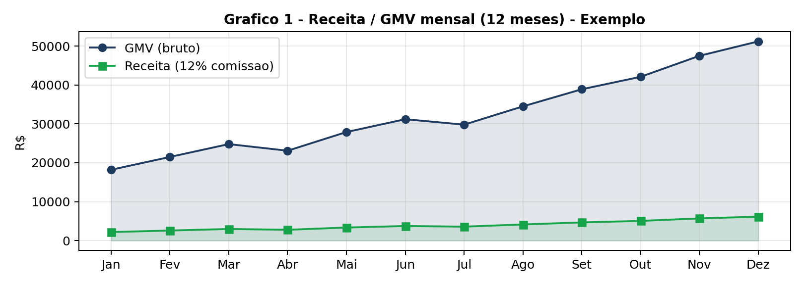
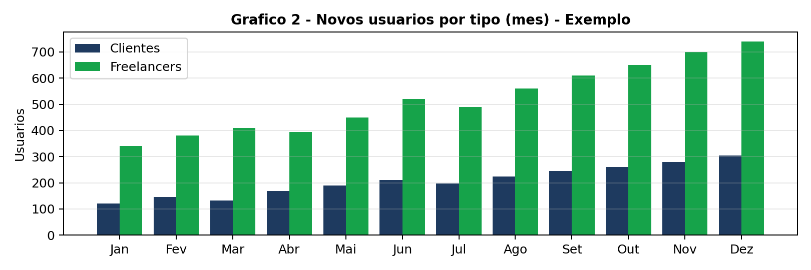
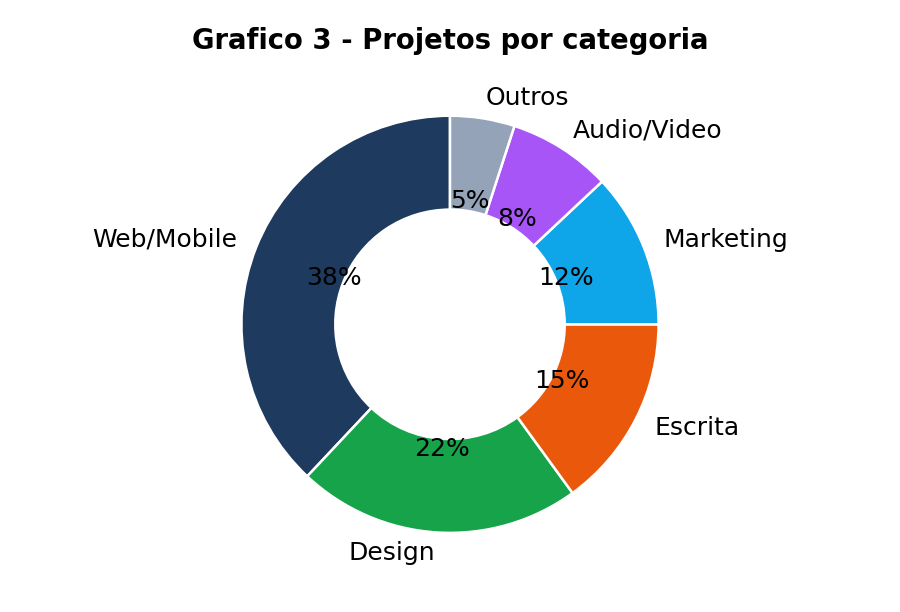
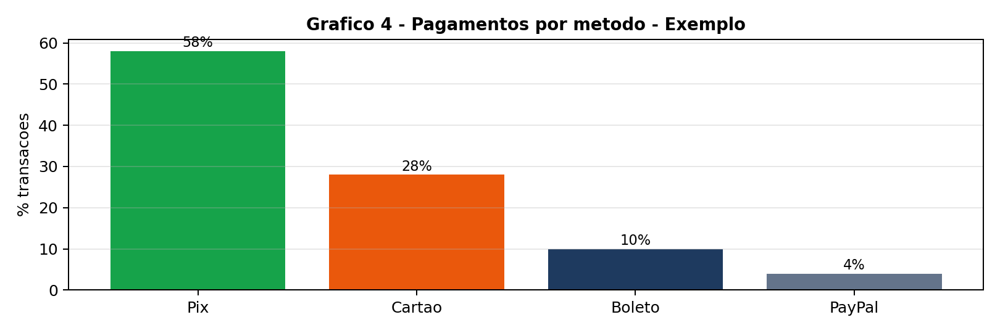
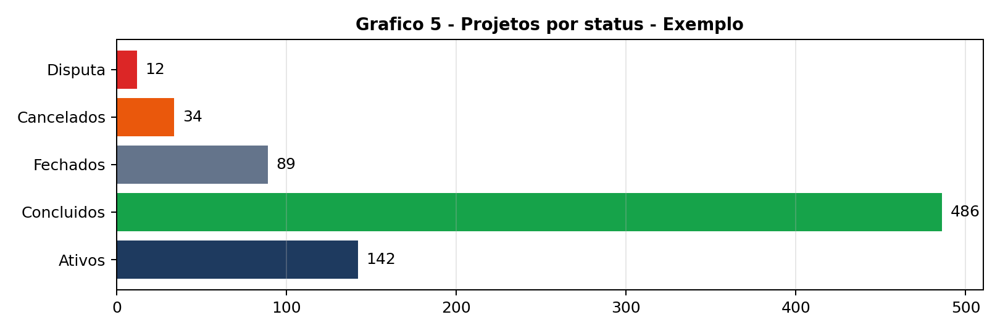
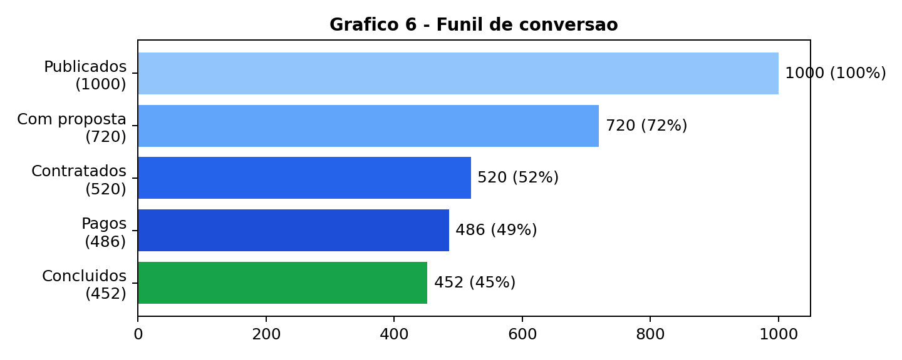
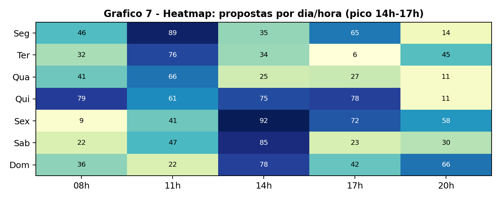
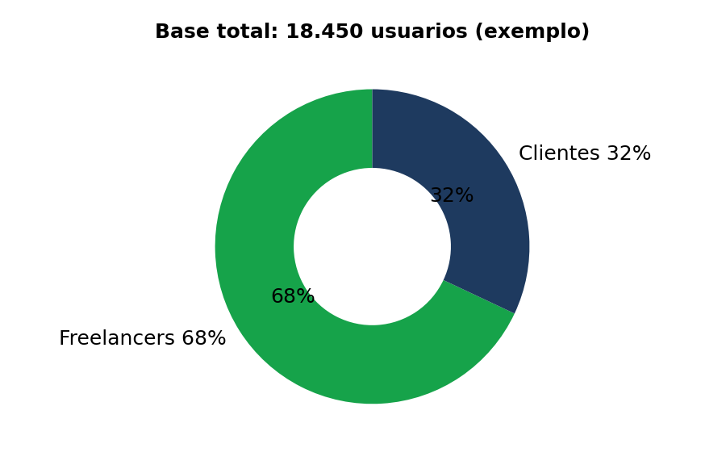

# Freelajob - Relatorio de Requisitos Funcionais (99Freelas clone)
Data: Nov/2026 | Base: analise do 99Freelas.com.br/project-flow e /como-funciona
## Visao Geral
Marketplace com pagamento em custodia (escrow). Cliente publica, freelancer propoe, cliente paga, freelancer executa, cliente libera, plataforma repassa (taxa 5-20%).
## Atores
- Visitante, Cliente, Freelancer, Admin
## Requisitos RF01-RF11
- RF01 Cadastro/Auth (Cliente ou Freelancer, e-mail, selo verificado)
- RF02 Perfil/Portfolio (3/12/15 por plano, conta Pix, ranking)
- RF03 Categorias (Web, Design, Escrita, Marketing, Audio/Video)
- RF04 Projetos (criar, aprovar, editar/fechar/reabrir/turbinar, convidar)
- RF05 Propostas (oferta, oferta final com taxa, prazo, 10/mes Free, promovida)
- RF06 Escrow (Pix/Cartao/Boleto/PayPal, custodia, liberar 5 dias, saque 2/4/6)
- RF07 Chat por projeto (bloqueio contato externo)
- RF08 Entregas/Avaliacao (1-5 estrelas em 14 dias)
- RF09 Disputas (vencedor ou moderacao, parcial)
- RF10 Busca (palavra/categoria/habilidade/preco/nivel)
- RF11 Notificacoes (e-mail + in-app)
## Fluxo 8 etapas
1 Publicacao > 2 Aprovacao > 3 Propostas > 4 Selecao > 5 Pagamento > 6 Execucao > 7 Liberacao > 8 Repasse
## Dashboard Usuario
- Cliente: projetos ativos, propostas, em custodia, concluidos
- Freelancer: saldo disponivel/bloqueado, em andamento, avaliacao, mini-grafico ganhos
## Dashboard Admin (seu)
Cards: Usuarios 18.450 | GMV R$512k | Receita R$61k | Escrow R$38k | Ticket R$1.054
Graficos: 1 Receita/GMV, 2 Novos usuarios, 3 Categorias donut, 4 Metodos pagamento, 5 Status projetos, 6 Funil, 7 Heatmap, 8 Base total
## Monetizacao
- Taxa cliente 5-20% (min R$10), Freelancer Free 20%/Pro R$49,90 15%/Premium R$89,90 10%
- Gateway: Pix 2%, Cartao 4,99%+0,50, Boleto 1,79%+0,69, PayPal 6,40%+0,60
- Turbinar R$19,90+
## Incrementos
Fluxo caixa previsto, ranking publico, exclusividade 24h, badge dourado, repasse parcial, media propostas, WhatsApp
## Modelo dados
users, profiles, categories, skills, projects, proposals, messages, payments, withdrawals, disputes, reviews, portfolio_items, notifications, plans, audit_logs, stats_daily
## Roadmap
MVP 4-6 sem (cadastro, projeto, proposta, Pix manual, admin+3 graficos) > Fase2 3-4 sem (gateway, disputas, planos, turbinar) > Fase3 (app, ranking, IA)







